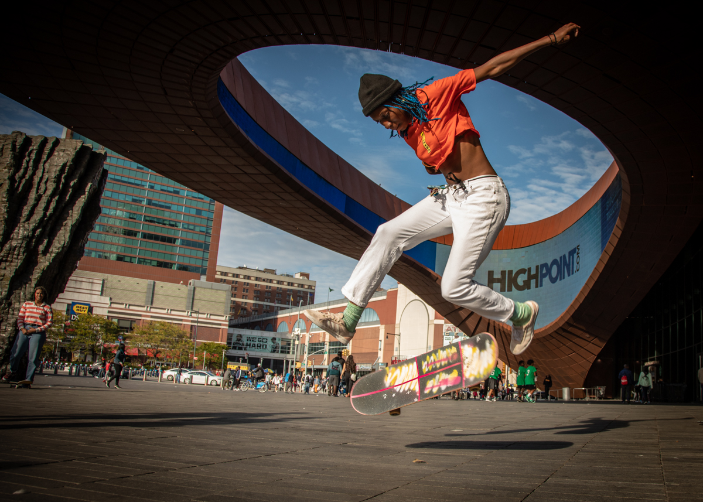

Welcom to the world of skateboarding,
this website will introduce you to all
aspects of skateboarding. Including
skateboard background culture, skateboard
skills, skateboard board, skateboard
community and so on. The establishment of
this platform is to hope that more people
can understand the skateboard culture, more
people are willing to try this sport, and
help people who love skateboarding to answer
some questions.
Culture
Skateboarding, form of recreation and sport, popular among youths, in which a person rides standing balanced on a small board mounted on wheels. Considered one of the so-called extreme sports, skateboarding as a professional sport boasts a range of competitions, including vertical and street-style events. Vertical skating (also called “vert”) features aerial acrobatics performed in half-pipes that were originally built to emulate empty swimming pools. Street style features tricks performed in a real or simulated urban environment with stairs, rails, ledges, and other obstacles. Skateboarding has developed as a youth subculture that emphasizes creativity and individuality. It is an alternative to mainstream team sports, which are more formally organized and largely controlled by adults.
